Lab3_Distributions_I.RmdVokey & Allen, Chapters 5 & 6 on additional descriptive statistics, and recovering the distribution.
We are about to spend three entire labs devoted to understanding and working with distributions. We will cover topics that closely relate to the main statistics lecture, but also take advantage of R to examine distributions in a more direct and hands manner that is not possible without a programming environment.
This lab has one practical section and two conceptual sections.
Practical I - Sampling from distributions in R
Conceptual I - Monte-Carlo simulation
In a research context data is collected in the form of measurements under various conditions. The data is a sample, representing only the outcomes that did happen. Generally, researchers recognize that there is variability in their measuring process, so the sample data could have been different. When analyzing data we are interested both in what did happen, and what could have happened in terms of the pattern of numbers. To really understand the issues at play, we need to take a deep dive into distributions and understand what happens when we take samples from them.
I will take an informal approach to defining distributions. We can think of a distribution as the place or machine controlling where numbers come from. In other words, distributions are number creation machines. We get to define them, and our choices determine the kinds of numbers that can be produced from a distribution.
More formally, a probability distribution defines the probabilities that particular numbers can be drawn or sampled from the distribution.
sample()
R has several built-in functions for sampling from common distributions (discussed later). Before we look at those, let’s make our own using sample().
Here is the input syntax for sample(x, size, replace = FALSE, prob = NULL). x is a vector with one or more elements, size is how many samples to take from the elements in the vector, replace can be set to TRUE or FALSE (controlling whether sampling is done with or without replacement), and prob is a vector of probabilities controlling the probability of sampling each element in the vector x.
When we use sample, we can create discrete distributions and sample from them. By, default every element has an equal probability of being sampled.
sample(x= 1:2, size = 2) #> [1] 2 1
sample(x= 1:2, size = 10, replace = TRUE) #> [1] 2 1 2 1 2 2 1 1 1 2
sample(x = c("heads","tails"), size=10, replace= TRUE) #> [1] "heads" "tails" "tails" "heads" "tails" "tails" "tails" "heads" "heads" #> [10] "tails"
sample(x= 1:1000, size = 10, replace = FALSE) #> [1] 71 511 60 164 776 528 854 191 648 472
To sample random deviates from a normal distribution, use the rnorm(n, mean = 0, sd = 1) function. n is the number of observations to sample, mean is the mean of the normal distribution, and sd is the standard deviation of the normal distribution.
rnorm(n= 10,mean = 0, sd = 1) #> [1] 0.39130702 -1.76463022 -0.19537366 -0.45857900 0.35815276 0.28012368 #> [7] -0.09274585 1.44381346 -0.85887477 -0.11749123 rnorm(10,0,1) #> [1] 3.11742267 0.07238394 1.36908280 -1.55838887 -1.57698826 0.46310021 #> [7] -2.22295047 -0.11700011 1.38543386 -0.19646858
hist()
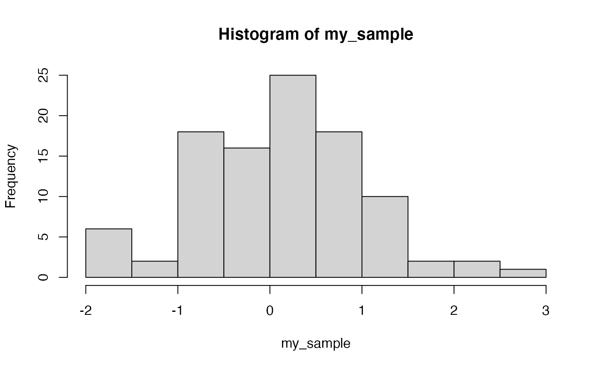
geom_histogram(). A requirement here is that the sample data is formatted in a data.frame first. I create a data frame with 100 observations in a sample_data column, and I add a sample column which contains all 1s, to refer to the fact that all of the numbers in sample_data belong to sample #1.my_data <- data.frame(sample_data = rnorm(100,0,1), sample = 1) library(ggplot2) ggplot(my_data, aes(x=sample_data))+ geom_histogram() #> `stat_bin()` using `bins = 30`. Pick better value with `binwidth`.
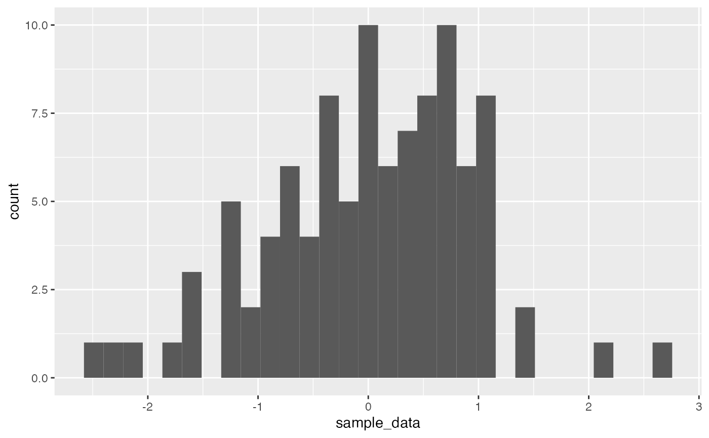
facet_wrap().Note: the use of the rep() function is new, it creates a vector that repeats the numbers from 1 to 4, 25 times each. This way, the first 25 rows in the dataframe represent the 25 observations in sample 1, the next 25 rows represent the observations in sample 2, and so on.
my_data <- data.frame(sample_data = rnorm(100,0,1), sample = rep(1:4, each=25)) ggplot(my_data, aes(x=sample_data))+ geom_histogram()+ facet_wrap(~sample) #> `stat_bin()` using `bins = 30`. Pick better value with `binwidth`.
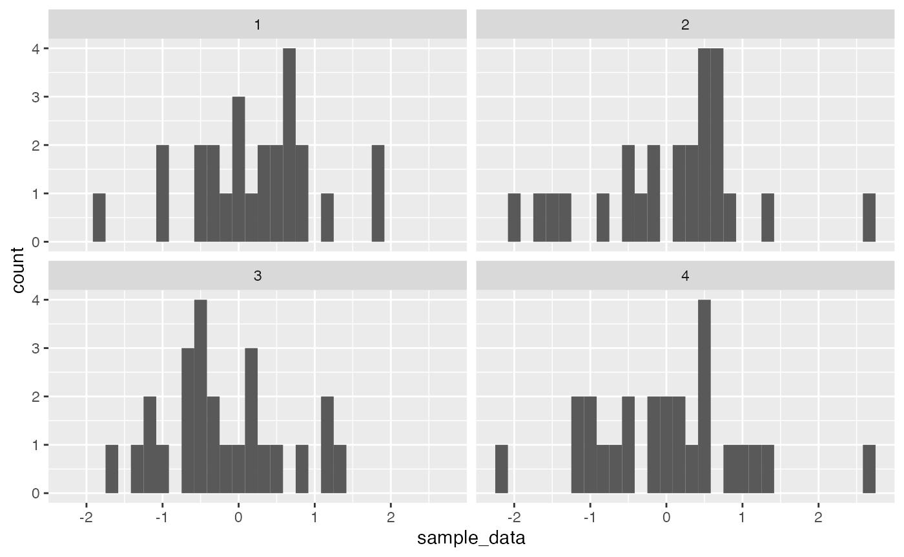
A uniform distribution is an equal probability distribution, where all numbers in between the smallest and largest have an equal probability of being sampled.
Use runif(n, min = 0, max = 1) to sample numbers from a uniform distribution. n is the number of observations, min is the starting minimum value, max is the largest value.
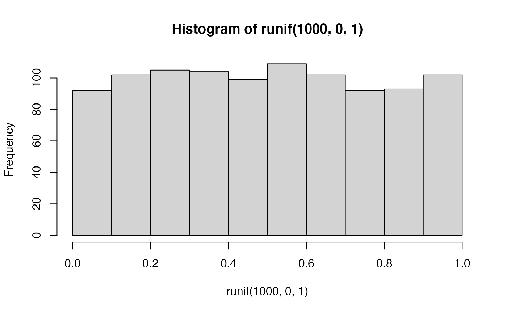
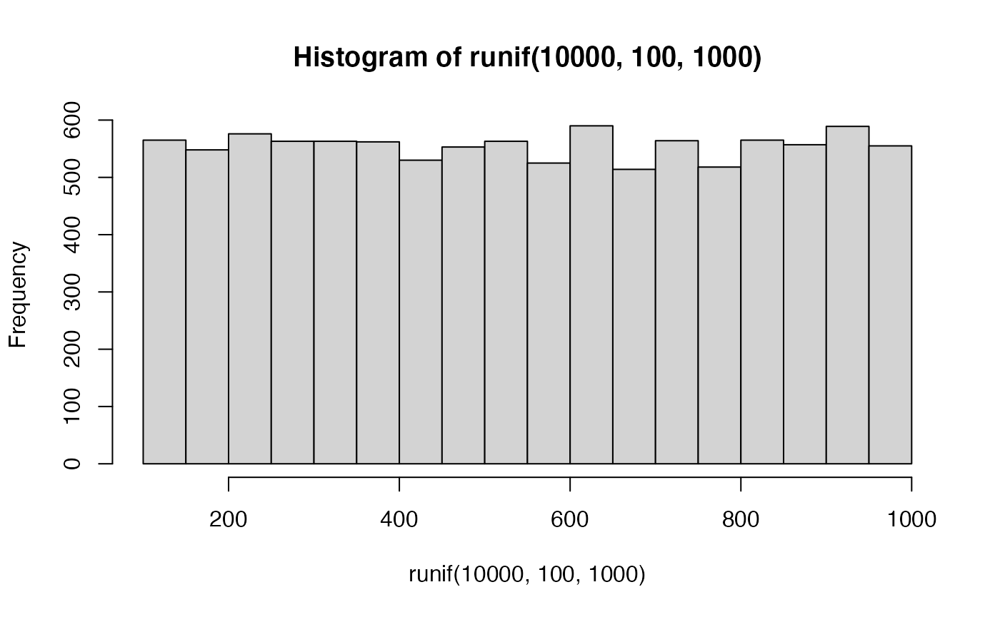
R contains many distributions to sample numbers from. The list can be found by ?distributions. Here a few more examples:
Exponential distribution
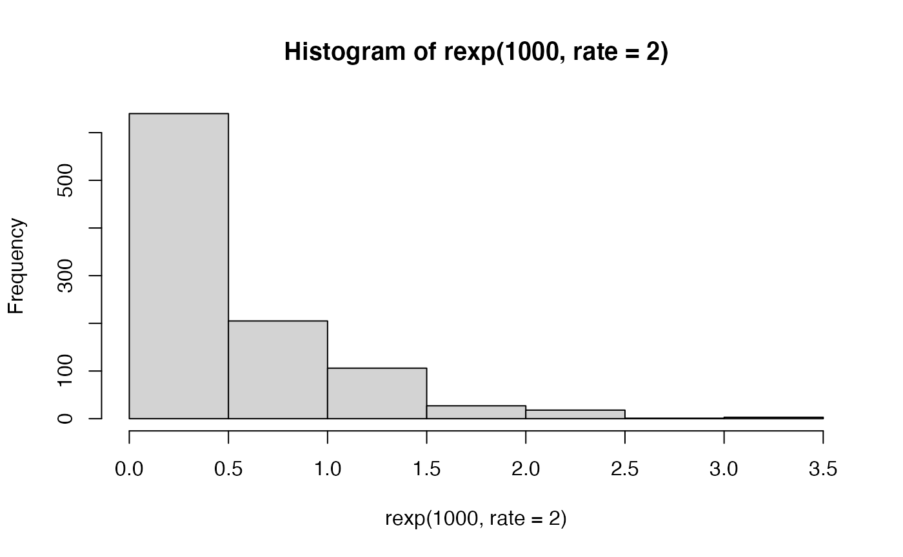
Binomial Distribution
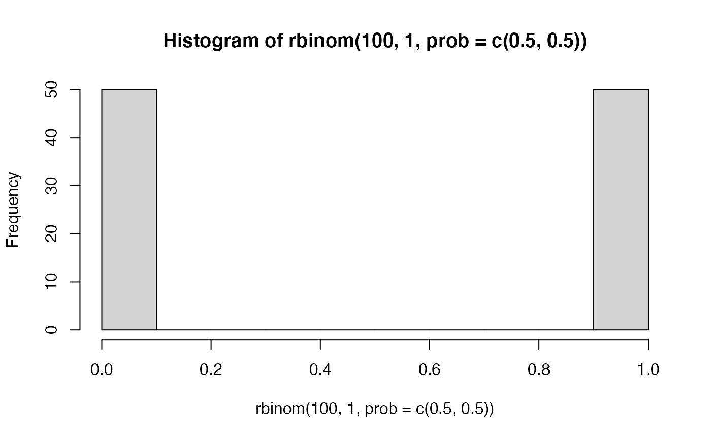
Weibull distribution
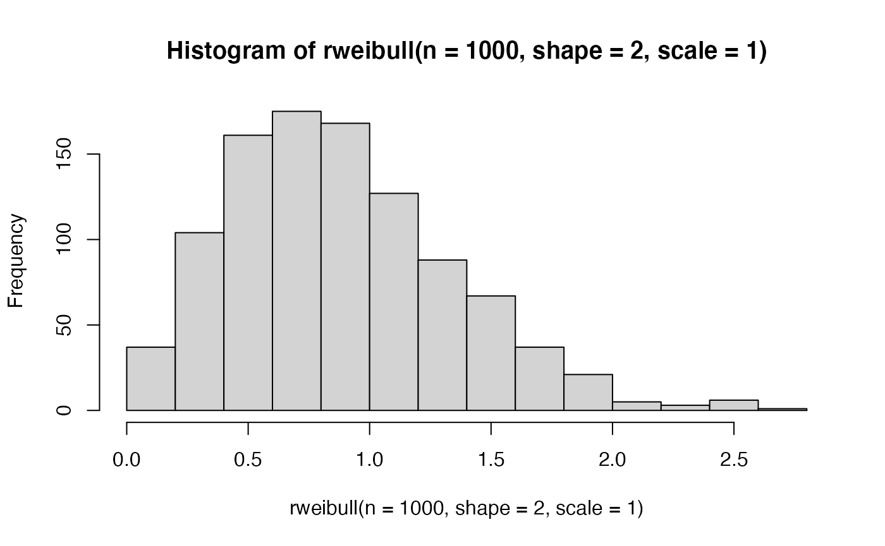
In Chapter 5, Vokey and Allen discuss skewness and kurtosis as additional descriptive statistics that describe the shapes of sets of numbers. Functions for skewness and kurtosis can be obtained in R by installing additional packages such as the moments packages.
library(moments) my_sample <- rnorm(1000,0,1) mean(my_sample) #> [1] 0.006623161 sd(my_sample) #> [1] 0.9999825 skewness(my_sample) #> [1] -0.06048121 kurtosis(my_sample) #> [1] 3.067296 hist(my_sample)
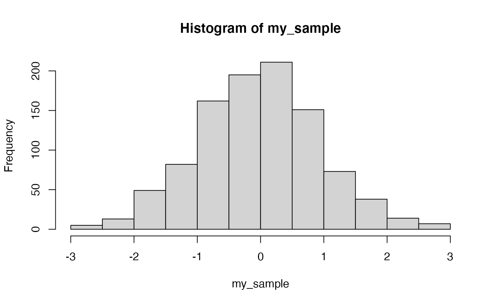 2. Compute the mean, sd, skewness, and kurtosis for a sample of 1000 observations from a right-skewed exponential distribution.
my_sample <- rexp(1000,2) mean(my_sample) #> [1] 0.4744765 sd(my_sample) #> [1] 0.4986259 skewness(my_sample) #> [1] 2.23461 kurtosis(my_sample) #> [1] 10.78363 hist(my_sample)
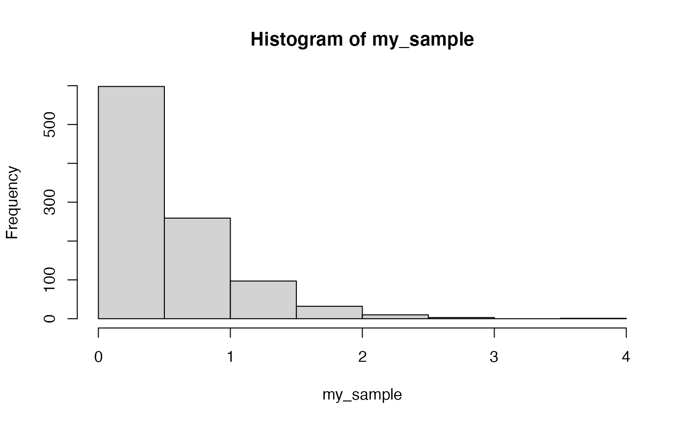
Many of the next conceptual sections in our labs will involve a process called Monte carlo simulation. In short, a Monte Carlo simulation is one where a sampling process is carried out hundreds or thousands of times in order to estimate how the sampling process behaves over the long run. Monte Carlo simulations can be conducted very easily in R, because we can write scripts to make R repeatedly sample things, and then we can measure and assess the samples we created.
Monte-carlo simulations can be used as a tool to demonstrate statistical facts and concepts, and we will take the opportunity to use this tool in many different ways throughout this course. The purpose of this conceptual section is to introduce you to running Monte-Carlo simulations, and show you that they can be done in different ways.
In general we will:
And, most important, we will identify important statistical concepts and use monte-carlo simulations to demonstrate our understanding of these concepts.
A coin is fair if it comes up heads equally often as tails in the long run. Let’s consider how we could use a simulation to demonstrate this idea. We need to
There is more than one way to use R to accomplish these goals. Here, we use the sample function, and sample 1s for heads, and 0s for tails. We also create a for loop, and repeat a sampling process 100 times. Each iteration we flip a coin, save the result, and calculate the proportion of heads and tails so far. We save everything in a data.frame, and plot the proportion of heads as we go from 1 to 100 flips. We should see the proportion get closer to .5 as we increase the number of flips.
#initialize variables flip <- c() outcome <- c() proportion_heads <- c() proportion_tails <- c() # run the simulation for(i in 1:1000){ flip[i] <- i outcome[i] <- sample(x = c(1,0), size = 1) proportion_heads[i] <- sum(outcome)/length(outcome) proportion_tails[i] <- 1-proportion_heads[i] } # create a dataframe with saved data sim_data <- data.frame(flip, outcome, proportion_heads, proportion_tails) # plot the simulation results ggplot(sim_data, aes(x=flip,y=proportion_heads))+ geom_point()+ geom_line()+ geom_hline(yintercept=.5, color="red")
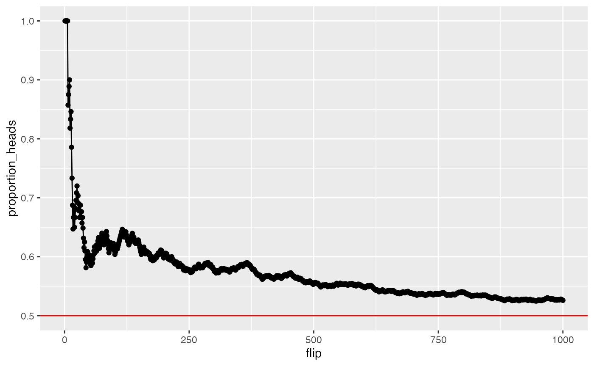
A fundamental concept in sampling is that samples of numbers become increasingly like their parent population (or distribution) as the size of the sample (n or number of observations in the sample) increases. Let’s demonstrate an example of this phenomena.
Our parent population will be a normal distribution with mean =100, and sd = 50. We want to conduct a simulation that takes a sample across different ranges of n. Then for each sample, we will calculate a sample statistic such as the mean and standard deviation. These sample statistics should become closer and closer to the “true” parent distribution parameters as n increases.
#initialize variables n <- seq(1000,100000,1000) sample_mean <- c() sample_sd <- c() #run simulation for(i in 1:length(n)){ sim_sample <- rnorm(n[i], mean = 100, sd = 50) sample_mean[i] <- mean(sim_sample) sample_sd[i] <- sd(sim_sample) } # organize results in dataframe sim_data <- data.frame(n, sample_mean, sample_sd) # graph results ggplot(sim_data,aes(x=n,y=sample_mean))+ geom_point()+ geom_line()+ geom_hline(yintercept=100, color="red")
ggplot(sim_data,aes(x=n,y=sample_sd))+ geom_point()+ geom_line()+ geom_hline(yintercept=50, color="red")
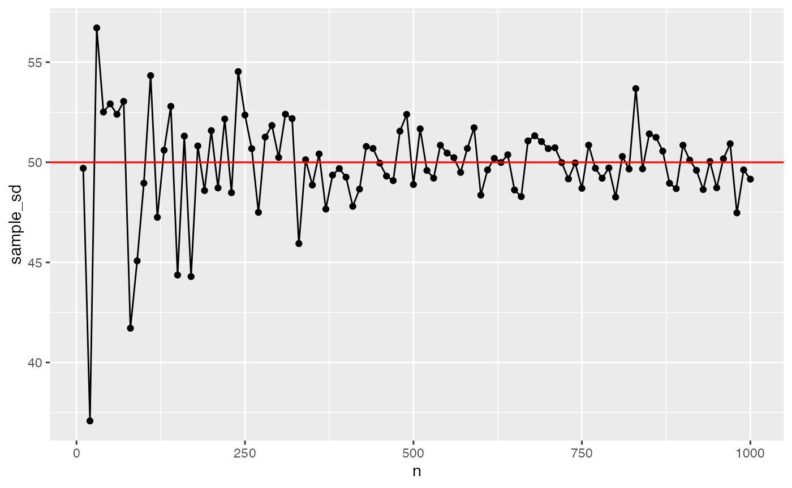
In general, labs will present a discussion of problems and issues with example code like above, and then students will be tasked with completing generalization assignments, showing that they can work with the concepts and tools independently.
Your assignment instructions are the following:
Create five samples of 25 observations from a normal distribution with mean 200, and standard deviation 100. Compute the mean of each sample, and plot the means in a graph using ggplot2. (1 point)
Additionally calculate the standard deviation of each sample from above. Use the standard deviations for error bars, and produce another graph with the means along with error bars using ggplot2. (1 point)
The last two problems concern the concept of using a sample to estimate a property of the population or distribution the sample came from. For example, if we know the mean of a sample, can we be confident that the population has the same mean? If we were trying to guess at the population mean, what statistics from the sample should we use?
Some sample statistics are “biased”, and may systematically under or overestimate a population parameter. Others are “unbiased”, in this case the sample statistic tends to correctly estimate the population parameter over the long run.